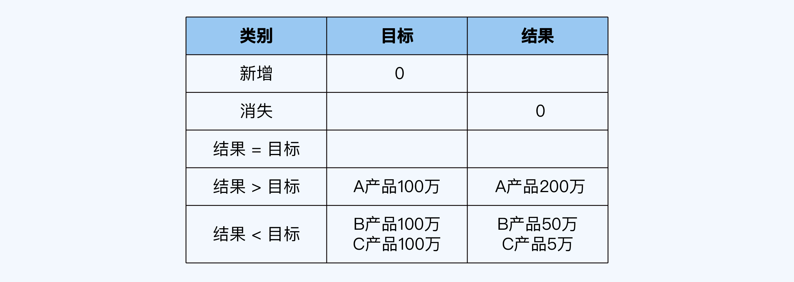

- 00 开篇词 为什么每个人都应该学会复盘？.md.html
- 01 CLAP模型：一个优秀的复盘模型是什么样的？.md.html
- 02 OPTM框架：怎么使用CLAP模型？.md.html
- 03 教练技术：怎么做复盘才能化解冲突？.md.html
- 04 制度和文化：怎么营造复盘环境？.md.html
- 05 三角法：怎么组建复盘团队？.md.html
- 06 MECE原则：怎么准备复盘资料？.md.html
- 07 五步法：如何召开一次高效的复盘会议？.md.html
- 08 事实比较：如何快速比较目标与结果？.md.html
- 09 分析原因：梳理逻辑时怎样找到切入点？.md.html
- 10 洞察规律：怎样更新认知才能找准发力点？.md.html
- 11 OKR：怎样根据复盘结论制定计划？.md.html
- 12 Double Check：怎么检查评估一次复盘的效果？.md.html
- 13 案例导学：我是怎么帮助企业做复盘的？.md.html
- 14 战略升级：5年增长100倍的跨境电商做对了什么？.md.html
- 15 业务关键点：改进一个点业绩增长50%？.md.html
- 16 组织结构设计：变动一个职位，就能带来100万_月的增量吗？.md.html
- 17 高效赋能：怎么建立流程才能把人效提升3倍？.md.html
- 18 人才培养：怎么把人才转化成实际生产力？.md.html
- 19 预算制定：人头和财务预算到底怎么定？.md.html
- 春节荐书（一）《原则》：在不确定中找到确定.md.html
- 春节荐书（二）《人类简史》：故事的力量.md.html
- 结束语 复盘，见天地见众生见自己.md.html
- 捐赠
08 事实比较：如何快速比较目标与结果？
你好，我是张鹏。
上一讲我为你介绍了召开高效复盘会议的“五步法”，带你了解了复盘会议的标准流程。其实五步法如果不算第一步破冰的话，第二步到第五步刚好对应CLAP模型的四个环节。
复盘的基石部分就是对比，也就是事实比较，毕竟如果脱离事实，一切都是空谈。
事实比较这一步听起来好像很简单，但实际上做起来还是有一定难度的。这一讲我就会和你分享事实比较的方法。-
事实的组成
首先，我们要搞清楚事实包括什么，其实它由目标和结果两个部分组成。
目标可以分为两种，一种是数据型目标（Goal），比较容易用数据进行衡量，比如经营数据、运营数据、技术参数等，相对客观和简单；另一种是里程碑型目标（Objective），不太容易用数字进行衡量，一般需要用文字来进行描述，比如“新产品研发获得重大突破”等。
结果（Result）的情况往往会更复杂，大多数情况下最终的结果和当初设定的目标不太一样。
有些时候你会看到，有的结果和目标是可以进行比较的，比如超出了目标，或者没有达成目标。
还有些时候，因为某些原因，原来制定的目标“消失”了，或者产生的结果不在原定的目标设定范围之内。这时候，我们就要看实际的结果和项目的战略战术方向是否保持一致了。
目标的来源
关于目标，我们要思考两个关键问题：
- 目标从哪里来？或者说，目标是如何制定的？
- 目标制定得合理合规吗？
如果清楚了这两个问题的答案，你将获得鸟瞰全局的视野，无论你在职场的任何阶段，都能“做正确的事”，而不仅仅是“正确地做事”。这样你就能够事半功倍，更容易获得晋升的机会。
公司的本质是一个商业组织，通过创造价值和价值变现来实现生存发展。一个公司如果想要有长久的生命力，就一定要有使命、愿景、价值观、战略、目标、结果和行动计划这样的东西，如下图所示：
使命是我们（公司）存在的意义，即我们解决了什么社会性、市场性的问题。-
愿景是我们的未来是什么样子？比如：成为行业领导者，最佳产品提供商、受人尊敬的雇主等等。-
价值观是保证我们完成使命愿景所提倡和反对的底线原则。-
战略是实现愿景的方向、中长期规划、策略等。-
目标是实现战略近期需要聚焦达成的具体事项。-
关键结果是如何知道我们在向目标推进。-
行动计划是实现关键结果的行动序列。
从图中可以看到，目标是上承战略，下接行动的。目标与战略的匹配度，基本上可以反映出这个目标好还是不好。它既是目标制定的标准，也是目标的审视标准。
了解这一点，你就不再是只能被动接受目标的小白了，而是已经有足够的能力去区分目标的好坏优劣，去“做正确的事”。
如果目标和战略的匹配度可以定性目标的好与坏，那目标的制定是否符合SMART原则则是定量了。
SMART原则
如果公司很重视客户服务，那么客服部门的目标如果定成“增强客户服务意识”就很不明确，而定成“一个季度内，把客户满意度提升至95%”或者“1个季度内，在满意度不变的情况下，把客户响应时间缩短到2小时内”就更为精准和易于理解。
SMART是由5个英文单词的首字母构成，它们分别是：
- Specific：目标必须是具体的。
- Measurable：目标是可以被衡量的。
- Attainable/Aspirational：目标是可达成的/目标是有野心的。
- Relevant：和其他目标的相关性。
- Time-bound：目标是要有时间截止点的。
其中A有两种，这里补充说明一下：如果是确定性的目标，用KPI考核的，那么A就是Attainable，强调可达成；如果是不确定的目标，用OKR管理的，比如创新项目，那么A就是Aspirational（有野心的），强调高挑战。
用一句话来说，SMART原则可以这么理解：要干什么？结果是什么？条件是什么？什么时间完成？
填写结果
看完目标，我们这里再看看结果。
对于数据型目标的结果，我总结了一个快速对比表格工具。
比如，某公司开发了三种产品A\B\C，期待的销售额分别都是100万，针对的是不同的客群比如：品牌企业客户、非品牌企业客户、个人客户。而最后的结果是：A产品销售了200万，B产品销售额是50万，C产品销售额是5万，填入上述表格之后，就是：

这个数据highlight出来之后，就会在下一步的逻辑分析中，进一步分析ABC卖得好还是不好的原因到底是什么。
对于里程碑型目标的结果，我们可以用第6讲中介绍的逻辑树进行整理，也就是基于MECE原则逐层分解。
比如分析成本升高的问题，就可以把成本按照“固定成本/可变成本”的逻辑树先列出来，进一步分析到底是哪些项目上升导致的问题。

对齐
对于自己团队内的目标和结果，我们可以独立地完成对比工作；但如果涉及跨部门的项目或者更大范围内的业务，我们可能无法把自己团队的结果与更高层次的目标直接进行对比，这时候就可以用另一个办法，对齐（Align）。
对齐是指，让里程碑型目标的结果要和公司战略目标的方向保持一致，或者说有直接的因果关系。无论是在一开始设定目标的时候，还是在复盘做事实比较的时候，对齐都特别的重要。
你还记得我在开篇词中讲的那个案例吗？我的一位朋友从用户运营做到了助理副总裁，他在公司做业务复盘的时候，提出把C2C模型改为B2C模型，然后自己内部创业去做MVP（Minimum Viable Product，最小化可用原型），并且采用OKR的方式来进行管理和沟通。
下面这张图展示了他的OKR规划：
内部创业的第一年，他并没有达成经营目标约定的数字（KR3）。但是在年底复盘的时候，他还是做出了一个结果——成功打造了B2C的运营团队，这个很关键。
选品和客群有关（KR2），虽然客群选择出了偏差，但是他成功打造了B2C的运营团队，相当于解决了OKR中的两个关键结果（KR1&KR4），流量转化率和交付满意度。他对齐了“打造B2C直卖业务MVP”这个目标，依然算是取得了成功。
如果复盘的时候，他只是泛泛地说“锻炼了队伍”“开拓新业务”“打硬仗”之类的话，领导估计就不会买单给支持了。
所以事实比较的时候，需要找到结果与战略目标之间的关系：
如果属于增强循环的因果关系，即使没有达成预定目标，依然不失为好结果。反之，如果结果和战略目标之间并没有这种关系（包括结果与战略目标是反向关系或无关），就属于不好的结果。
SCQA架构
即使是好的结果，在复盘会议上把来龙去脉讲清楚，也很关键。这里，我介绍一个把事实讲清楚的方法，SCQA架构。
SCQA架构是结构化表达的一种语言范式，四个字母分别代笔Situation（情境）、Complication（冲突）、Question（问题）和Answer（答案）。学会SCQA框架，会提升你表达的结构性，突出重点。
根据不同的目的或者表达重点，SCQA框架可以分为以下4种形式：标准式、开门见山式、突出忧虑式和突出信心式。你想强调什么，就先说什么。
1. 标准式
第1种是标准式，SCA，也就是情境-冲突-答案。这种形式适合一般的事实描述。
“你有没有遇到过这样的客户？她每天带孩子来体验你家的产品，孩子喜欢得不肯走，似乎觉得什么都好。但是最后要成交的时候，她又觉得价格贵了。”
这是在讲述“价格认知”这个概念的背景，也就是S情境。
“真的是因为她没钱吗？不一定，你可能会发现，她住的小区和开的车都很高档，因为没钱和不舍得花钱是两回事儿。那么有没有什么办法，可以让这些有钱却不舍得花钱的客户变得肯花钱呢？”
这是指出了一个和常识的不一样的地方，也就是C冲突。
“今天我来跟大家讲一下我遇到这类客户是怎么做转化的，看看对大家是否有帮助……”
这是给出了A答案。
2. 开门见山式
第2种是开门见山式，ASC，也就是答案-情境-冲突。这种形式适合抛出自己的主张，得到大家的重视。
“我今天要向大家汇报一下我们的工作结果，关于把公司的C2C匹配模型改为B2C精品直卖模型的MVP构想。”
这是开门见山地直接给出自己的主张“改变平台模型”，也就是A答案。
“公司从创始以来一直使用C2C平台匹配模型，一端是海量的产品，另一端是无限宽广的人群，平台靠收交易佣金做价值变现。”
这是描述之前的C2C匹配情况和商业模式，也就是S情景。
“但是用户在我们的平台上并不清楚如何选择适合他们需求的产品，包括产品的品质如何，价位是否虚高，好评是不是由水军刷出来的。现实的结果是，虽然我们在流量端做了重金投入，但是只有极少数商家获得了高额营收，而绝大多数商家并没有太多成交量。这样下去，靠收交易佣金的平台模式很难取得成功，这两年的经营数据也证实了这一点。”
这是指出“实践证明C2C并没有解决客户问题”，也就是C冲突。
用“背景-冲突-答案”的开门见山式和团队沟通，你的第一句话，就是重点。
3. 突出忧虑式
第3种是突出忧虑式，CSA，也就是冲突-情境-答案。这种形式适合highlight问题，引发关注。
“哎呀，返券优惠再这么搞下去，公司就没有利润了，年底大家的奖金就泡汤了。”
听到这句话的时候，估计大家心里都要咯噔一下，这是C冲突。
“还好，我们项目组做过一个新模式的数据分析以及小规模测试，如果按照我们的策略在全公司范围内推广，这个季度可以在不影响营收的前提下，降低折扣点。”
听到这句话，一颗悬到嗓子眼的心总算是放下来了，这就是S情境。
“目前还缺一个资深的运营经理，如果能来一个这样的人，我们有把握把返利降低10个点，这些都是利润。”
这是A答案，要一个资深运营经理的head count，事情就搞定了。
突出忧虑式，关键在于强调冲突，引导听众的忧虑，从而激发对背景的关注，和对答案的兴趣。
4. 突出信心式
第4种是突出信心式，QSCA，也就是问题-情境-冲突-答案。这种形式适合有创新想法向老板（广义的老板包括投资人、媒体等）申请政策和资源。
“今天全人类面临的最大威胁是什么？”
这是引发大家（投资人）对未来的思考，也就是Q问题。
“在过去的几十年里，科技高速发展，人类拥有的先进武器可以摧毁地球几十次。”
这是现实情况，也就是S情景。
“但是我们拥有了摧毁地球的能力，却没有逃离地球的方法。”
这是现存的矛盾，也就是C冲突。
“所以，我们今天面临的最大威胁，是没有移民外星球的科技，我们公司将致力于私人航天技术，在可预见的未来，实现火星移民计划。”
这是A答案。
上面这段话就是埃隆·马斯克说过的，火星移民计划用这种表达框架来介绍，是不是突然觉得靠谱多了？试想一下，如果你用这样的框架在复盘的时候申请一个内部创业项目，是不是更有机会？
小结
在这一讲，我为你介绍了在事实比较这一步快速比较目标与结果的方法。现在，我们回顾一下重点内容。
- 事实包括两个部分，目标和结果。目标又可以分为数据型目标和里程碑型目标。
- 一个目标设定得好不好，主要看目标定性时是否与公司的战略对齐，定量时是否遵循SMART原则。
- 数据型目标的结果，可以用我总结的快速对比表格来对比；对于里程碑型目标的结果，可以遵循SCQA框架进行逻辑组织和表达，这样可以极大地提升复盘会议的参与度。
思考题
这就是这一讲的全部内容了，最后留一道思考题给你。如果让你对现在或曾经负责的某个项目进行事实对比（里程碑型目标及其结果），你会采用SCQA框架中的哪种形式（SCQ/ASC/CSA/QSCA）来描述呢？请你试着描述一下，并说明选择这种形式的原因。
欢迎你把答案写在留言区，和我一起讨论。
© 2019 - 2023 Liangliang Lee. Powered by gin and hexo-theme-book.